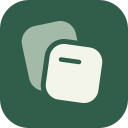

GlidePod
Application icon · October 2026

Light appearanceDark appearance
96 px
64 px
40 px
24 px
16 px
Monochrome
Forest · #315E4BSage · #A2BAA7Ivory · #F3F5EB
Application icon · October 2026

Light appearance